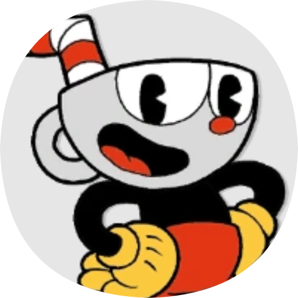
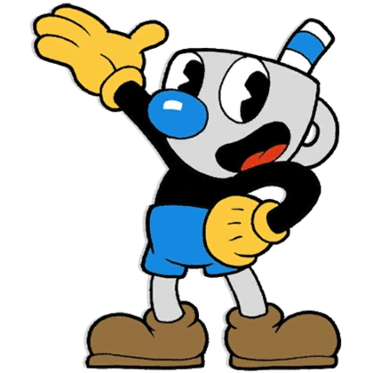
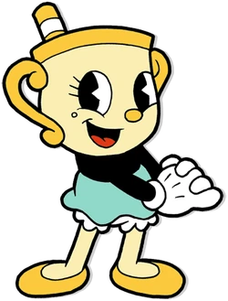

Xicrinho é uma xícara antropomorfizada. Sua cabeça é uma grande xícara cinza-clara — recipiente de seu fluido vital —, de onde pende um canudo dobrável listrado em vermelho e branco. Seus olhos são grandes, ele tem um pequeno nariz vermelho e ele está sempre com uma expressão determinada em seu rosto, e ele veste uma camisa preta de mangas compridas, luvas brancas, shorts vermelhos e botas marrons.
Quando ele morre ele vira um fantasma, e sua cor é um azul fantasmagórico, seus shorts e pernas agora são substituídos por um rabo de fantasma, seu canudo vira uma auréola, e ele fica com uma expressão deprimida. No centro do peito do fantasma de Xicrinho, há um coração rosa que podemos usar parry para ressuscitá-lo.
A aparência de Xicrinho é inspirada nos designs dls personagens de desenhos animados clássicos de 1930.
Xicrinho parece ser o mais confiante, audacioso e determinado dos irmãos. Seu tipo de personalidade foi inspirado pelo tipo comum de protagonista de desenhos animados de 1930, que é o tipo "carismático, porém problemático". De acordo com a introdução do jogo, Xicrinho parece ter uma personalidade gananciosa, e está disposto a arriscar qualquer coisa para obter riquezas, até mesmo sua alma.
Mas apesar de suas falhas, Xicrinho tem um bom coração e em geral, tem boas intenções, isso é mostrado no final bom, onde ele e Caneco queimam todos os contratos de alma e deixam todos os residentes da Ilha Tinteiro livres.
Caneco (em inglês, Mugman) é um dos protagonistas do jogo Cuphead: Don't Deal With the Devil.
Caneco em geral é muito parecido com seu irmão Xicrinho, sua cabeça relembra um copo, e ele veste uma camisa preta de mangas compridas, luvas amarelas, bermudas azuis e botas marrons.
O que os diferência,
em comparação com seu irmão é que ele tem um esquema de cor azul, um canudo mais curto e um nariz bem maior, seus olhos são menores que os de seu irmão e sua cabeça também é um pouco mais magra comparada com a de seu irmão.
Embora ele seja divertido como Cuphead, Mugman é mostrado sendo mais cuidadoso e menos imprudente em comparação com seu irmão. Ele age como a voz da razão, isso é mostrado quando ele implora para Cuphead não fazer o acordo com o Diabo, pois isso acabaria custando-lhes suas almas.
Ele é mais cuidadoso e calmo que Cuphead, mas quando Cuphead apostou suas almas e perdeu ele ficou incrivelmente bravo
Ms. Chalice é a tritagonista de Cuphead . Ela foi revelada pela primeira vez no trailer de anúncio do DLC, Cuphead: The Delicious Last Course . Ela pode ser usada se Cuphead ou Mugman equiparem o amuleto Astral Cookie , porém apenas um jogador pode trocar de lugar com ela.
Como seu sobrenome diz, a Sra. Chalice é um cálice antropomórfico amarelo claro, com borda e alças douradas, e um canudo listrado de dourado e branco saindo de sua cabeça, semelhante ao de Mugman.
Suas características faciais consistem em um pequeno nariz dourado, olhos redondos com três cílios em cada um e uma toupeira amarela sob o olho direito.
Ela veste uma camisa preta de manga comprida, uma saia azul clara com calções brancos, luvas brancas (com punhos brancos ou amarelos) e um par de sapatilhas douradas.
A Sra. Chalice parece ser uma pessoa alegre, embora manipuladora, por exemplo, enganando Mugman para comer um biscoito astral para trocar de lugar com ele na primeira cena do DLC. No entanto, ela também se mostra bastante altruísta e compassiva com os outros. Ela está disposta a desistir de sua busca pelo Wondertart depois de saber que requer que uma alma real seja criada e ficou feliz por ter feito dois novos amigos.
Ms. Chalice é a única personagem jogável a ter habilidades únicas. Suas habilidades atualmente conhecidas são:
Velha Chaleira (em inglês, Elder Kettle) é um personagem de apoio em Cuphead: Don't Deal With the Devil. Ele age como guardião dos irmãos Xicrinho e Caneco. É responsável por dar aos irmãos a poção para atirar e, possivelmente, também por escrever o tutorial.
A Velha Chaleira, como o nome diz, é uma chaleira velha com um bigode, que tem um tom beje. Ele usa luvas brancas e ele está sempre carregando uma bengala marrom.
Velha Chaleira é uma figura parental clássica, sendo muito sábio e sempre querendo que os irmãos façam a coisa certa. Também está fortemente implícito que ele é um cavaleiro aposentado, tendo uma espada pendurada na parede de sua casa e uma estátua dele ajoelhado no nível Rugged Ridge.
Seu Torresmo (Porkind) é o comerciante do jogo. Ele pode ser encontrado em todos os mundos do jogo e vende encantos e armas para lidar com lutas de chefes.
Seu Torresmo é um porco antropomórfico. Ele é bege e tem um focinho rosa, ele também tem um pequeno bigode abaixo de seu focinho.
Ele veste uma camiseta cinza e um macacão castanho, ele também usa um tapa-olho em seu olho direito.
Ele pode ser encontrado nos três lugares abaixo